Last updated: 2018-11-15
workflowr checks: (Click a bullet for more information) ✔ R Markdown file: up-to-date
Great! Since the R Markdown file has been committed to the Git repository, you know the exact version of the code that produced these results.
✔ Environment: empty
Great job! The global environment was empty. Objects defined in the global environment can affect the analysis in your R Markdown file in unknown ways. For reproduciblity it’s best to always run the code in an empty environment.
✔ Seed:
set.seed(12345)
The command set.seed(12345) was run prior to running the code in the R Markdown file. Setting a seed ensures that any results that rely on randomness, e.g. subsampling or permutations, are reproducible.
✔ Session information: recorded
Great job! Recording the operating system, R version, and package versions is critical for reproducibility.
✔ Repository version: 7bcd123
wflow_publish or wflow_git_commit). workflowr only checks the R Markdown file, but you know if there are other scripts or data files that it depends on. Below is the status of the Git repository when the results were generated:
Ignored files:
Ignored: .DS_Store
Ignored: analysis/.DS_Store
Ignored: analysis/VennDiagram2018-07-24_06-55-46.log
Ignored: analysis/VennDiagram2018-07-24_06-56-13.log
Ignored: analysis/VennDiagram2018-07-24_06-56-50.log
Ignored: analysis/VennDiagram2018-07-24_06-58-41.log
Ignored: analysis/VennDiagram2018-07-24_07-00-07.log
Ignored: analysis/VennDiagram2018-07-24_07-00-42.log
Ignored: analysis/VennDiagram2018-07-24_07-01-08.log
Ignored: analysis/VennDiagram2018-08-17_15-13-24.log
Ignored: analysis/VennDiagram2018-08-17_15-13-30.log
Ignored: analysis/VennDiagram2018-08-17_15-15-06.log
Ignored: analysis/VennDiagram2018-08-17_15-16-01.log
Ignored: analysis/VennDiagram2018-08-17_15-17-51.log
Ignored: analysis/VennDiagram2018-08-17_15-18-42.log
Ignored: analysis/VennDiagram2018-08-17_15-19-21.log
Ignored: analysis/VennDiagram2018-08-20_09-07-57.log
Ignored: analysis/VennDiagram2018-08-20_09-08-37.log
Ignored: analysis/VennDiagram2018-08-26_19-54-03.log
Ignored: analysis/VennDiagram2018-08-26_20-47-08.log
Ignored: analysis/VennDiagram2018-08-26_20-49-49.log
Ignored: analysis/VennDiagram2018-08-27_00-04-36.log
Ignored: analysis/VennDiagram2018-08-27_00-09-27.log
Ignored: analysis/VennDiagram2018-08-27_00-13-57.log
Ignored: analysis/VennDiagram2018-08-27_00-16-32.log
Ignored: analysis/VennDiagram2018-08-27_10-00-25.log
Ignored: analysis/VennDiagram2018-08-28_06-03-13.log
Ignored: analysis/VennDiagram2018-08-28_06-03-14.log
Ignored: analysis/VennDiagram2018-08-28_06-05-50.log
Ignored: analysis/VennDiagram2018-08-28_06-06-58.log
Ignored: analysis/VennDiagram2018-08-28_06-10-12.log
Ignored: analysis/VennDiagram2018-08-28_06-10-13.log
Ignored: analysis/VennDiagram2018-08-28_06-18-29.log
Ignored: analysis/VennDiagram2018-08-28_07-22-26.log
Ignored: analysis/VennDiagram2018-08-28_07-22-27.log
Ignored: analysis/VennDiagram2018-08-28_13-05-27.log
Ignored: analysis/VennDiagram2018-09-12_01-45-59.log
Ignored: analysis/VennDiagram2018-09-12_01-49-31.log
Ignored: analysis/VennDiagram2018-09-12_01-58-11.log
Ignored: analysis/VennDiagram2018-09-12_01-59-46.log
Ignored: analysis/VennDiagram2018-09-12_02-08-07.log
Ignored: analysis/VennDiagram2018-09-12_02-08-56.log
Ignored: analysis/VennDiagram2018-11-15_14-20-08.log
Ignored: analysis/VennDiagram2018-11-15_14-20-15.log
Ignored: analysis/VennDiagram2018-11-15_14-20-23.log
Ignored: analysis/VennDiagram2018-11-15_14-21-14.log
Ignored: analysis/VennDiagram2018-11-15_14-21-57.log
Ignored: analysis/VennDiagram2018-11-15_14-33-34.log
Ignored: analysis/VennDiagram2018-11-15_14-36-19.log
Ignored: analysis/VennDiagram2018-11-15_14-48-41.log
Ignored: analysis/VennDiagram2018-11-15_14-48-42.log
Ignored: analysis/VennDiagram2018-11-15_15-03-35.log
Ignored: analysis/VennDiagram2018-11-15_15-03-55.log
Ignored: analysis/VennDiagram2018-11-15_15-07-05.log
Ignored: analysis/VennDiagram2018-11-15_15-07-25.log
Ignored: analysis/VennDiagram2018-11-15_15-09-29.log
Ignored: analysis/VennDiagram2018-11-15_15-09-48.log
Ignored: analysis/VennDiagram2018-11-15_15-14-30.log
Ignored: data/DAVID_2covar/
Ignored: data/DAVID_results/
Ignored: data/Eigengenes/
Ignored: data/aux_info/
Ignored: data/hg_38/
Ignored: data/libParams/
Ignored: data/logs/
Ignored: docs/VennDiagram2018-07-24_06-55-46.log
Ignored: docs/VennDiagram2018-07-24_06-56-13.log
Ignored: docs/VennDiagram2018-07-24_06-56-50.log
Ignored: docs/VennDiagram2018-07-24_06-58-41.log
Ignored: docs/VennDiagram2018-07-24_07-00-07.log
Ignored: docs/VennDiagram2018-07-24_07-00-42.log
Ignored: docs/VennDiagram2018-07-24_07-01-08.log
Ignored: docs/figure/.DS_Store
Ignored: output/.DS_Store
Untracked files:
Untracked: docs/figure/time_two_covar.Rmd/
Unstaged changes:
Modified: analysis/time_two_covar.Rmd
# Library
library(edgeR)Loading required package: limmalibrary(limma)
library(VennDiagram)Warning: package 'VennDiagram' was built under R version 3.4.4Loading required package: gridLoading required package: futile.loggerlibrary(cowplot)Warning: package 'cowplot' was built under R version 3.4.4Loading required package: ggplot2Warning: package 'ggplot2' was built under R version 3.4.4
Attaching package: 'cowplot'The following object is masked from 'package:ggplot2':
ggsave# Read in the data
tx.salmon <- readRDS("../data/counts_hg37_gc_txsalmon.RData")
salmon_counts<- as.data.frame(tx.salmon$counts)
#tx.salmon <- readRDS("../data/counts_hg38_gc_dds.RData")
#salmon_counts<- as.data.frame(tx.salmon)
# Subset to T1-T3
salmon_counts <- salmon_counts[,1:144]
# Read in the clinical covariates
clinical_sample_info <- read.csv("../data/lm_covar_fixed_random.csv")
dim(clinical_sample_info)[1] 156 14# Subset to T1-T3
clinical_sample <- clinical_sample_info[1:144,(-12)]
dim(clinical_sample)[1] 144 13# Filter lowly expressed reads
cpm <- cpm(salmon_counts, log=TRUE)
expr_cutoff <- 1.5
hist(cpm, main = "log2(CPM) values in unfiltered data", breaks = 100, xlab = "log2(CPM) values")
abline(v = expr_cutoff, col = "red", lwd = 3)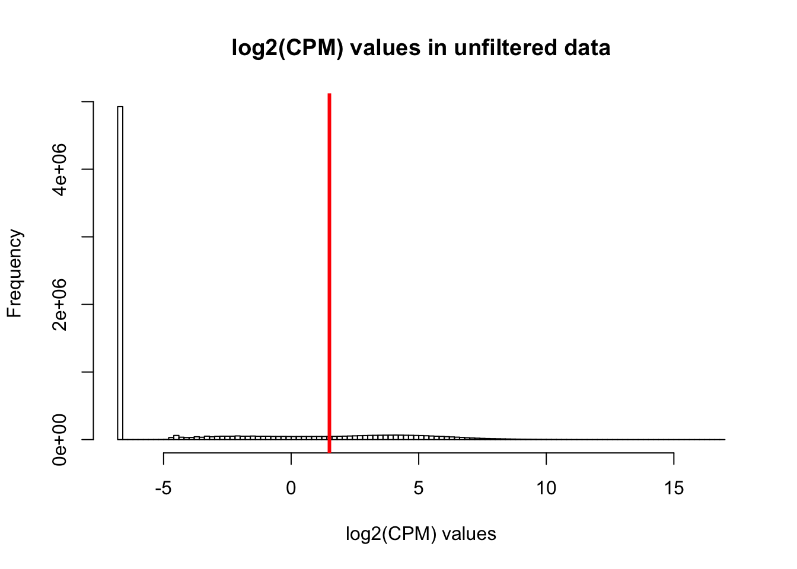
| Version | Author | Date |
|---|---|---|
| 7bcd123 | Lauren Blake | 2018-11-15 |
hist(cpm, main = "log2(CPM) values in unfiltered data", breaks = 100, xlab = "log2(CPM) values", ylim = c(0, 100000))
abline(v = expr_cutoff, col = "red", lwd = 3)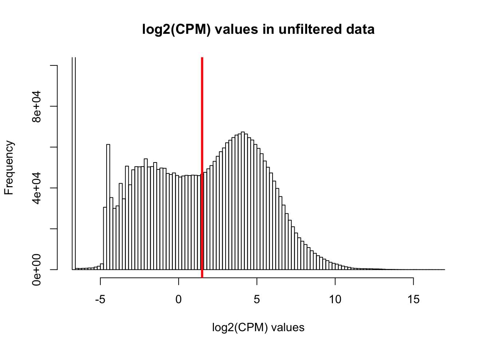
| Version | Author | Date |
|---|---|---|
| 7bcd123 | Lauren Blake | 2018-11-15 |
# Basic filtering
cpm_filtered <- (rowSums(cpm > 1.5) > 72)
genes_in_cutoff <- cpm[cpm_filtered==TRUE,]
hist(as.numeric(unlist(genes_in_cutoff)), main = "log2(CPM) values in filtered data", breaks = 100, xlab = "log2(CPM) values")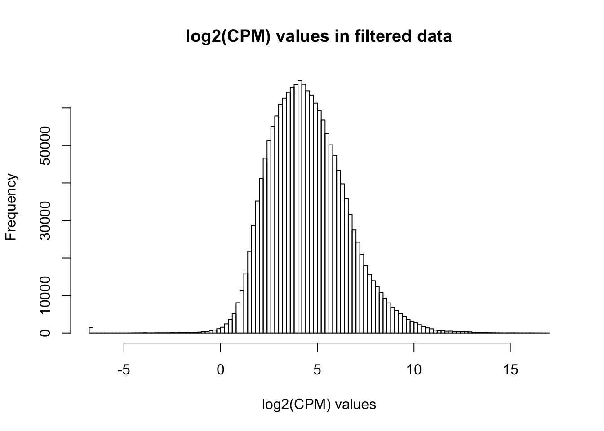
| Version | Author | Date |
|---|---|---|
| 7bcd123 | Lauren Blake | 2018-11-15 |
# Find the original counts of all of the genes that fit the criteria
counts_genes_in_cutoff <- salmon_counts[cpm_filtered==TRUE,]
dim(counts_genes_in_cutoff)[1] 11501 144# Filter out hemoglobin
counts_genes_in_cutoff <- counts_genes_in_cutoff[which( rownames(counts_genes_in_cutoff) != "HBB" ),]
counts_genes_in_cutoff <- counts_genes_in_cutoff[which( rownames(counts_genes_in_cutoff) != "HBA2" ),]
counts_genes_in_cutoff <- counts_genes_in_cutoff[which( rownames(counts_genes_in_cutoff) != "HBA1" ),]
# Take the TMM of the counts only for the genes that remain after filtering
dge_in_cutoff <- DGEList(counts=as.matrix(counts_genes_in_cutoff), genes=rownames(counts_genes_in_cutoff), group = as.character(t(clinical_sample$Individual)))
dge_in_cutoff <- calcNormFactors(dge_in_cutoff)
cpm_in_cutoff <- cpm(dge_in_cutoff, normalized.lib.sizes=TRUE, log=TRUE)
pca_genes <- prcomp(t(cpm_in_cutoff), scale = T, retx = TRUE, center = TRUE)
matrixpca <- pca_genes$x
PC1 <- matrixpca[,1]
PC2 <- matrixpca[,2]
pc3 <- matrixpca[,3]
pc4 <- matrixpca[,4]
pc5 <- matrixpca[,5]
pcs <- data.frame(PC1, PC2, pc3, pc4, pc5)
summary <- summary(pca_genes)
head(summary$importance[2,1:5]) PC1 PC2 PC3 PC4 PC5
0.25084 0.12998 0.08768 0.05670 0.03298 norm_count <- ggplot(data=pcs, aes(x=PC1, y=PC2, color= as.factor(clinical_sample$Time))) + geom_point(aes(colour = as.factor(clinical_sample$Time))) + ggtitle("PCA of normalized counts") + scale_color_discrete(name = "Time")
plot_grid(norm_count)| Version | Author | Date |
|---|---|---|
| 7bcd123 | Lauren Blake | 2018-11-15 |
clinical_sample[,1] <- as.factor(clinical_sample[,1])
clinical_sample[,2] <- as.factor(clinical_sample[,2])
clinical_sample[,4] <- as.factor(clinical_sample[,4])
clinical_sample[,5] <- as.factor(clinical_sample[,5])
clinical_sample[,6] <- as.factor(clinical_sample[,6])
# Create the design matrix
# Use the standard treatment-contrasts parametrization. See Ch. 9 of limma
# User's Guide.
design <- model.matrix(~as.factor(Time) + Age + as.factor(Race) + as.factor(BE_GROUP) + as.factor(psychmeds) + RBC + AN + AE + AL + RIN, data = clinical_sample)
colnames(design) <- c("Intercept", "Time2", "Time3", "Race3", "Race5", "Age", "BE", "Psychmeds", "RBC", "AN", "AE", "AL", "RIN")
# Fit model
# Model individual as a random effect.
# Recommended to run both voom and duplicateCorrelation twice.
# https://support.bioconductor.org/p/59700/#67620
cpm.voom <- voom(dge_in_cutoff, design, normalize.method="none")
#check_rel <- duplicateCorrelation(cpm.voom, design, block = clinical_sample$Individual)
check_rel_correlation <- 0.1179835
cpm.voom.corfit <- voom(dge_in_cutoff, design, normalize.method="none", plot = TRUE, block = clinical_sample$Individual, correlation = check_rel_correlation)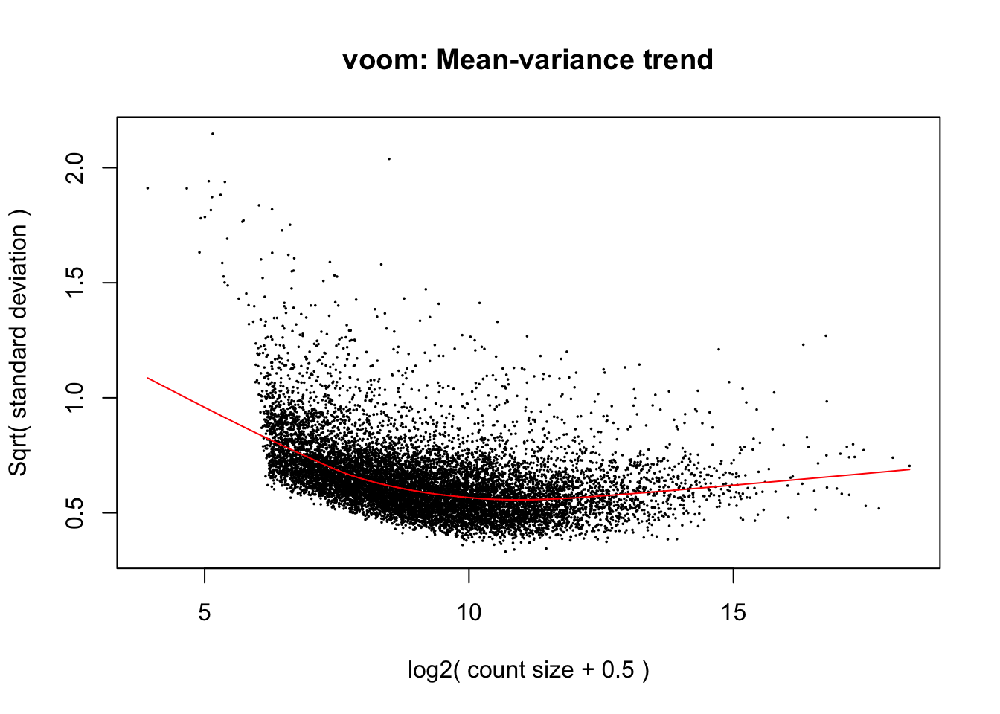
| Version | Author | Date |
|---|---|---|
| 7bcd123 | Lauren Blake | 2018-11-15 |
#check_rel <- duplicateCorrelation(cpm.voom.corfit, design, block = clinical_sample$Individual)
check_rel_correlation <- 0.1188083
plotDensities(cpm.voom.corfit[,1])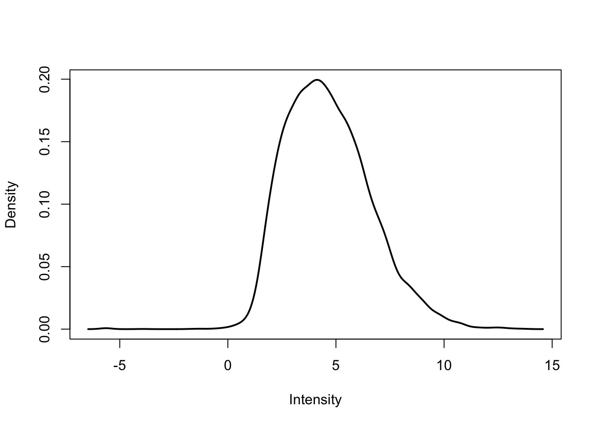
| Version | Author | Date |
|---|---|---|
| 7bcd123 | Lauren Blake | 2018-11-15 |
plotDensities(cpm.voom.corfit[,2])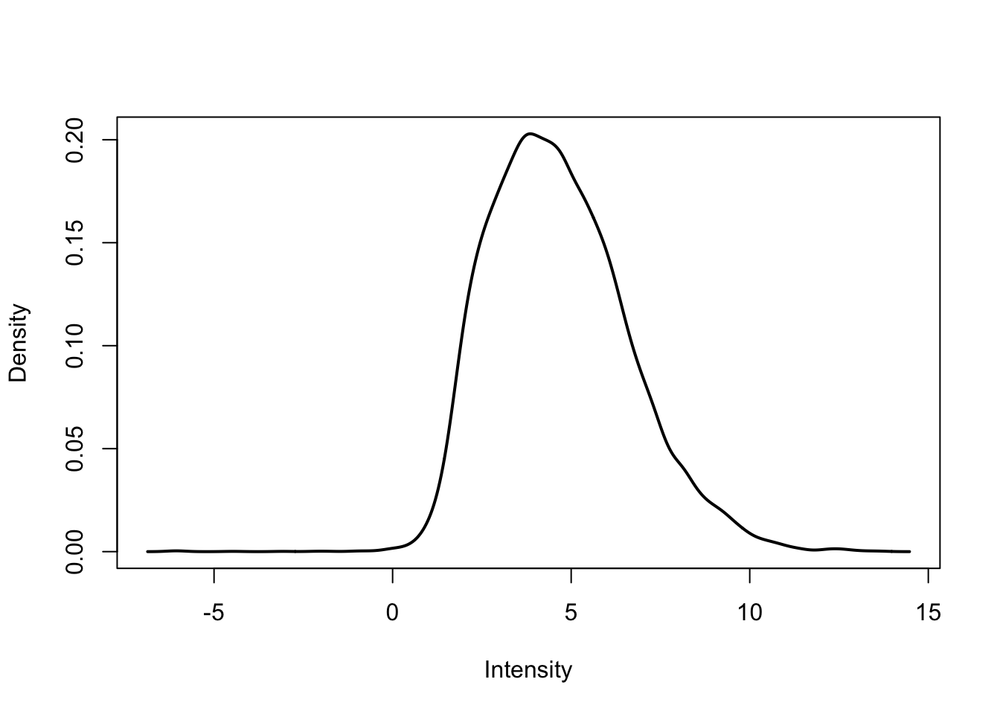
| Version | Author | Date |
|---|---|---|
| 7bcd123 | Lauren Blake | 2018-11-15 |
plotDensities(cpm.voom.corfit[,3])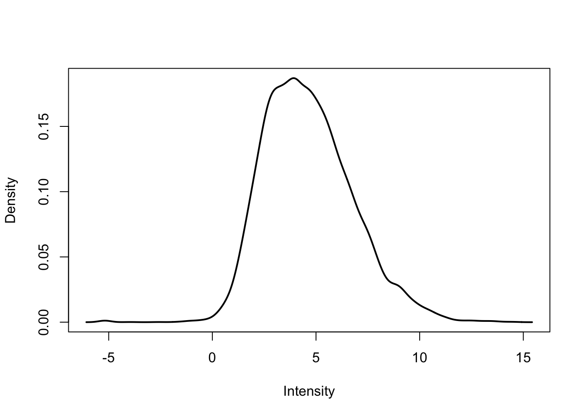
| Version | Author | Date |
|---|---|---|
| 7bcd123 | Lauren Blake | 2018-11-15 |
pca_genes <- prcomp(t(cpm.voom.corfit$E), scale = T, retx = TRUE, center = TRUE)
matrixpca <- pca_genes$x
PC1 <- matrixpca[,1]
PC2 <- matrixpca[,2]
pc3 <- matrixpca[,3]
pc4 <- matrixpca[,4]
pc5 <- matrixpca[,5]
pcs <- data.frame(PC1, PC2, pc3, pc4, pc5)
summary <- summary(pca_genes)
head(summary$importance[2,1:5]) PC1 PC2 PC3 PC4 PC5
0.25138 0.13024 0.08787 0.05642 0.03303 ggplot(data=pcs, aes(x=PC1, y=PC2, color=clinical_sample$Time)) + geom_point(aes(colour = as.factor(clinical_sample$Time))) + ggtitle("PCA of normalized counts") + scale_color_discrete(name = "Time")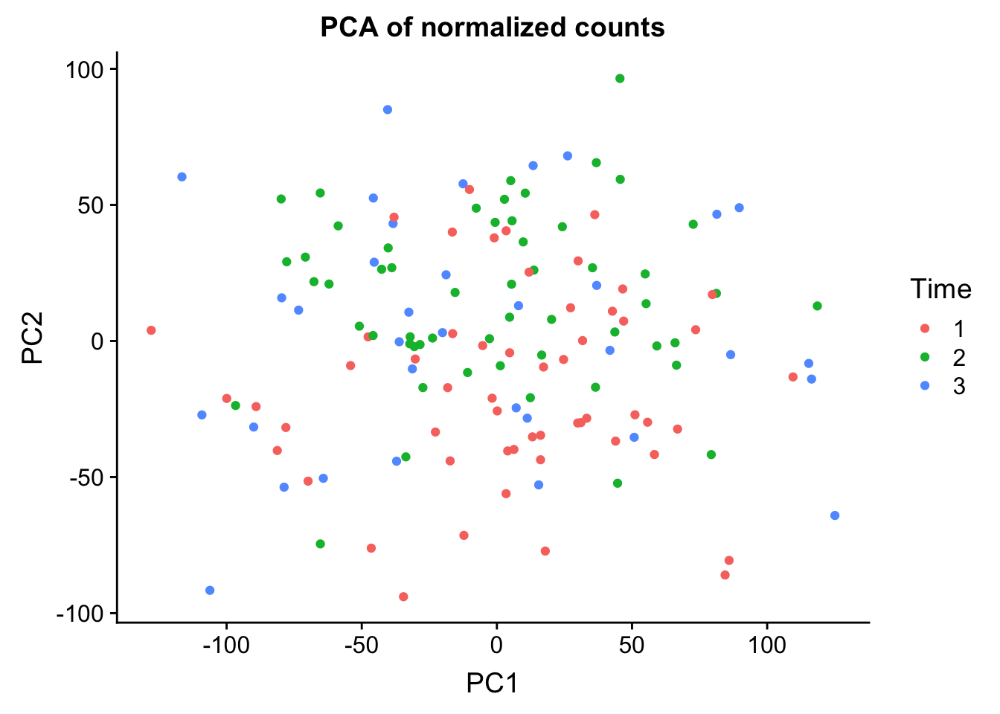
| Version | Author | Date |
|---|---|---|
| 7bcd123 | Lauren Blake | 2018-11-15 |
# Run lmFit and eBayes in limma
fit <- lmFit(cpm.voom.corfit, design, block=clinical_sample$Individual, correlation=check_rel_correlation)
# In the contrast matrix, have the time points
cm1 <- makeContrasts(Time1v2 = Time2, Time2v3 = Time3 - Time2, levels = design)
#cm1 <- makeContrasts(Time1v2 = Time2, Time2v3 = Time3, levels = design)
# Fit the new model
diff_species <- contrasts.fit(fit, cm1)
fit1 <- eBayes(diff_species)
FDR_level <- 0.05
Time1v2 =topTable(fit1, coef=1, adjust="BH", number=Inf, sort.by="none")
Time2v3 =topTable(fit1, coef=2, adjust="BH", number=Inf, sort.by="none")
#plot(fit1$coefficients[,1], fit1$coefficients[,2])
plot(Time1v2$logFC, Time2v3$logFC)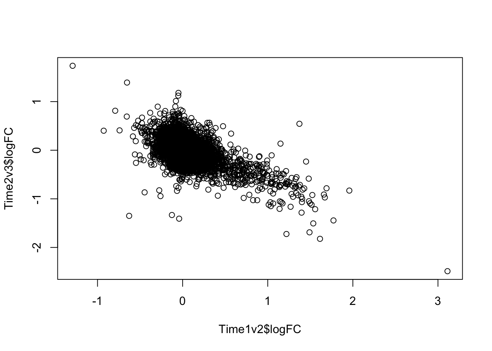
| Version | Author | Date |
|---|---|---|
| 7bcd123 | Lauren Blake | 2018-11-15 |
plot(Time1v2$t, Time2v3$t)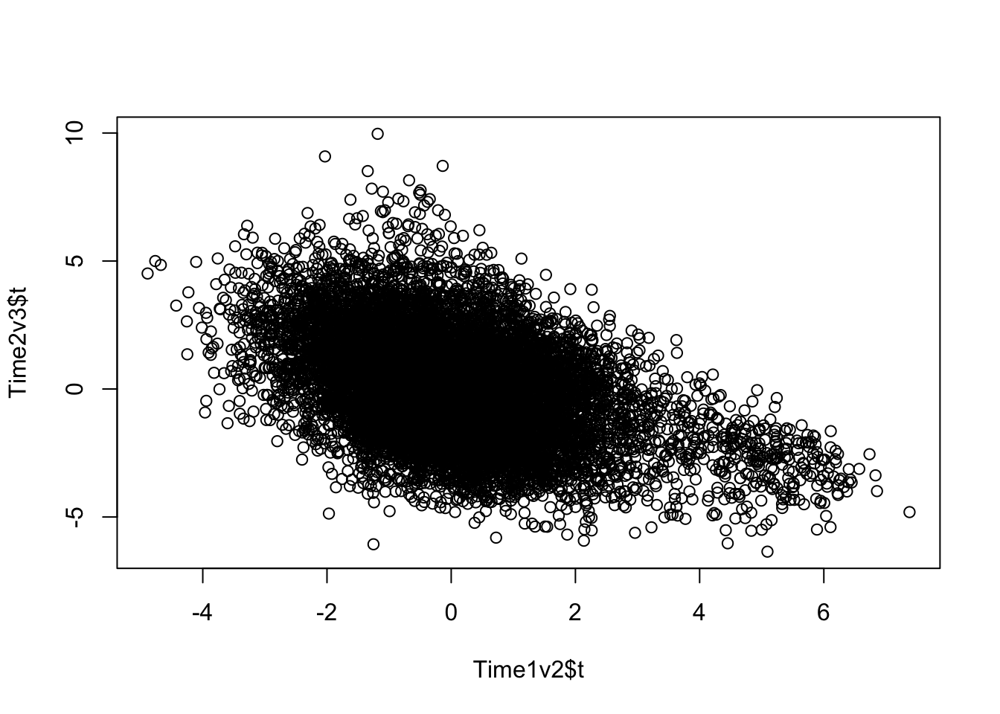
| Version | Author | Date |
|---|---|---|
| 7bcd123 | Lauren Blake | 2018-11-15 |
plot(Time1v2$adj.P.Val, Time2v3$adj.P.Val)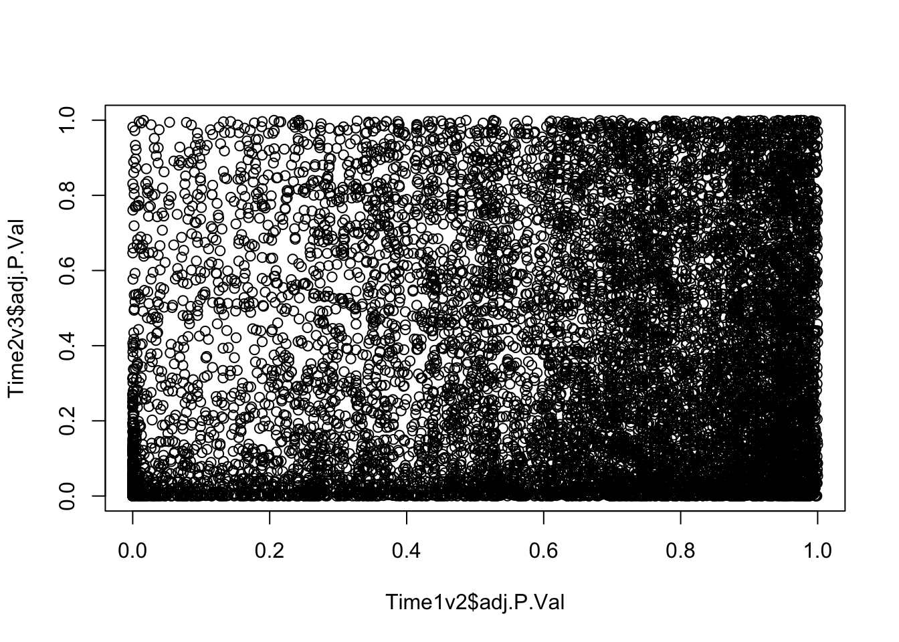
| Version | Author | Date |
|---|---|---|
| 7bcd123 | Lauren Blake | 2018-11-15 |
dim(Time1v2[which(Time1v2$adj.P.Val < FDR_level),])[1] 545 7dim(Time2v3[which(Time2v3$adj.P.Val < FDR_level),])[1] 2272 7head(topTable(fit1, coef=1, adjust="BH", number=100, sort.by="T")) genes logFC AveExpr t P.Value adj.P.Val
DCAF6 DCAF6 0.6665640 5.416600 7.379580 1.431162e-11 1.645551e-07
RNF10 RNF10 1.0377194 8.797228 6.855830 2.272978e-10 9.869232e-07
CTNNAL1 CTNNAL1 1.4096235 1.933041 6.831796 2.575030e-10 9.869232e-07
ALAS2 ALAS2 1.9585386 10.170073 6.735151 4.244316e-10 1.220029e-06
GPR146 GPR146 1.4288917 4.655669 6.569697 9.908589e-10 2.278579e-06
VTI1B VTI1B 0.5255125 6.179033 6.447501 1.841373e-09 3.086557e-06
B
DCAF6 15.90792
RNF10 13.24952
CTNNAL1 12.13729
ALAS2 12.60619
GPR146 11.85371
VTI1B 11.30170head(topTable(fit1, coef=2, adjust="BH", number=100, sort.by="T")) genes logFC AveExpr t P.Value
MPHOSPH8 MPHOSPH8 0.7255845 6.149600 9.968821 6.678677e-18
DFFA DFFA 0.5295244 4.523835 9.085363 1.091156e-15
RTF1 RTF1 0.5746842 5.542158 8.715696 8.936463e-15
PURA PURA 0.7886715 2.727101 8.512411 2.813599e-14
RP11-83A24.2 RP11-83A24.2 1.0124542 2.878809 8.153240 2.094359e-13
ZNF791 ZNF791 0.5775827 4.143783 7.827481 1.262969e-12
adj.P.Val B
MPHOSPH8 7.679143e-14 29.98284
DFFA 6.273054e-12 24.98292
RTF1 3.425048e-11 23.04615
PURA 8.087690e-11 21.35605
RP11-83A24.2 4.816188e-10 19.59222
ZNF791 2.420270e-09 18.21632# FDR 1%
FDR_level <- 0.01
Time12 <- rownames(Time1v2[which(Time1v2$adj.P.Val < FDR_level),])
Time23 <- rownames(Time2v3[which(Time2v3$adj.P.Val < FDR_level),])
mylist <- list()
mylist[["DE T1 to T2"]] <- Time12
mylist[["DE T2 to T3"]] <- Time23
# Make as pdf
Four_comp <- venn.diagram(mylist, filename= NULL, main="DE genes between timepoints (1% FDR)", cex=1.5 , fill = NULL, lty=1, height=2000, width=2000, rotation.degree = 180, scaled = FALSE, cat.pos = c(0,0))
grid.draw(Four_comp)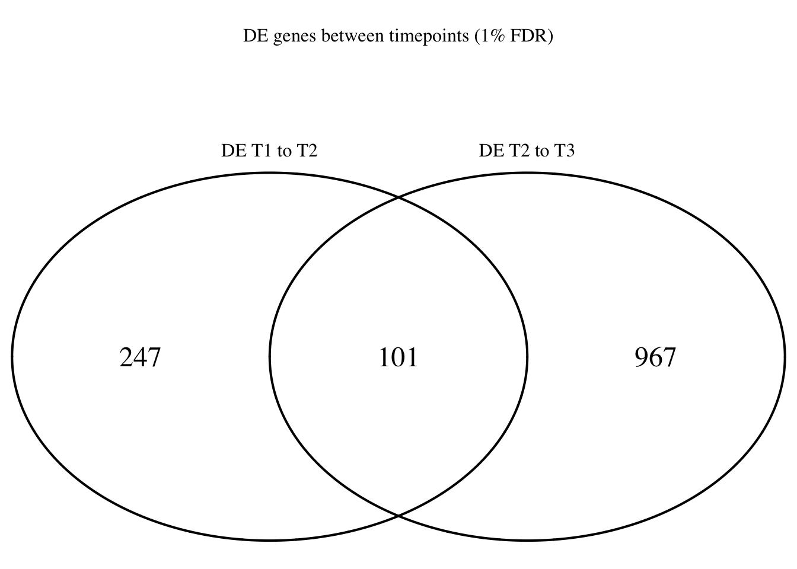
| Version | Author | Date |
|---|---|---|
| 7bcd123 | Lauren Blake | 2018-11-15 |
dev.off()null device
1 #pdf(file = "~/Dropbox/Figures/DET1_T2_change_weight_FDR1.pdf")
# grid.draw(Four_comp)
#dev.off()# FDR 5%
FDR_level <- 0.05
Time12 <- rownames(Time1v2[which(Time1v2$adj.P.Val < FDR_level),])
Time23 <- rownames(Time2v3[which(Time2v3$adj.P.Val < FDR_level),])
mylist <- list()
mylist[["DE T1 to T2"]] <- Time12
mylist[["DE T2 to T3"]] <- Time23
# Make as pdf
Four_comp <- venn.diagram(mylist, filename= NULL, main="DE genes between timepoints (5% FDR)", cex=1.5 , fill = NULL, lty=1, height=2000, width=2000, rotation.degree = 180, scaled = FALSE, cat.pos = c(0,0))
grid.draw(Four_comp)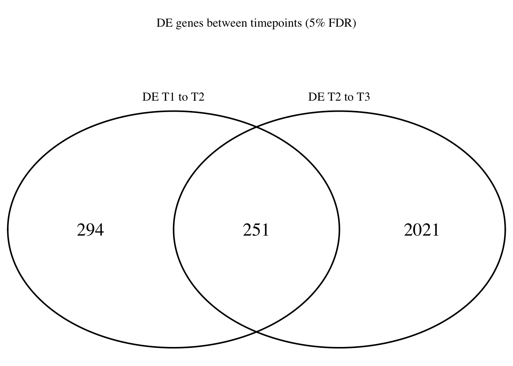
| Version | Author | Date |
|---|---|---|
| 7bcd123 | Lauren Blake | 2018-11-15 |
dev.off()null device
1 #pdf(file = "~/Dropbox/Figures/DET1_T2_change_weight_FDR5.pdf")
# grid.draw(Four_comp)
#dev.off()sessionInfo()R version 3.4.3 (2017-11-30)
Platform: x86_64-apple-darwin15.6.0 (64-bit)
Running under: OS X El Capitan 10.11.6
Matrix products: default
BLAS: /Library/Frameworks/R.framework/Versions/3.4/Resources/lib/libRblas.0.dylib
LAPACK: /Library/Frameworks/R.framework/Versions/3.4/Resources/lib/libRlapack.dylib
locale:
[1] en_US.UTF-8/en_US.UTF-8/en_US.UTF-8/C/en_US.UTF-8/en_US.UTF-8
attached base packages:
[1] grid stats graphics grDevices utils datasets methods
[8] base
other attached packages:
[1] cowplot_0.9.3 ggplot2_3.0.0 VennDiagram_1.6.20
[4] futile.logger_1.4.3 edgeR_3.20.9 limma_3.34.9
loaded via a namespace (and not attached):
[1] Rcpp_0.12.18 bindr_0.1.1 compiler_3.4.3
[4] pillar_1.3.0 formatR_1.5 git2r_0.23.0
[7] plyr_1.8.4 workflowr_1.1.1 R.methodsS3_1.7.1
[10] futile.options_1.0.1 R.utils_2.7.0 tools_3.4.3
[13] digest_0.6.16 evaluate_0.11 tibble_1.4.2
[16] gtable_0.2.0 lattice_0.20-35 pkgconfig_2.0.2
[19] rlang_0.2.2 yaml_2.2.0 bindrcpp_0.2.2
[22] withr_2.1.2 stringr_1.3.1 dplyr_0.7.6
[25] knitr_1.20 tidyselect_0.2.4 locfit_1.5-9.1
[28] rprojroot_1.3-2 glue_1.3.0 R6_2.2.2
[31] rmarkdown_1.10 purrr_0.2.5 lambda.r_1.2.3
[34] magrittr_1.5 whisker_0.3-2 backports_1.1.2
[37] scales_1.0.0 htmltools_0.3.6 assertthat_0.2.0
[40] colorspace_1.3-2 labeling_0.3 stringi_1.2.4
[43] lazyeval_0.2.1 munsell_0.5.0 crayon_1.3.4
[46] R.oo_1.22.0
This reproducible R Markdown analysis was created with workflowr 1.1.1